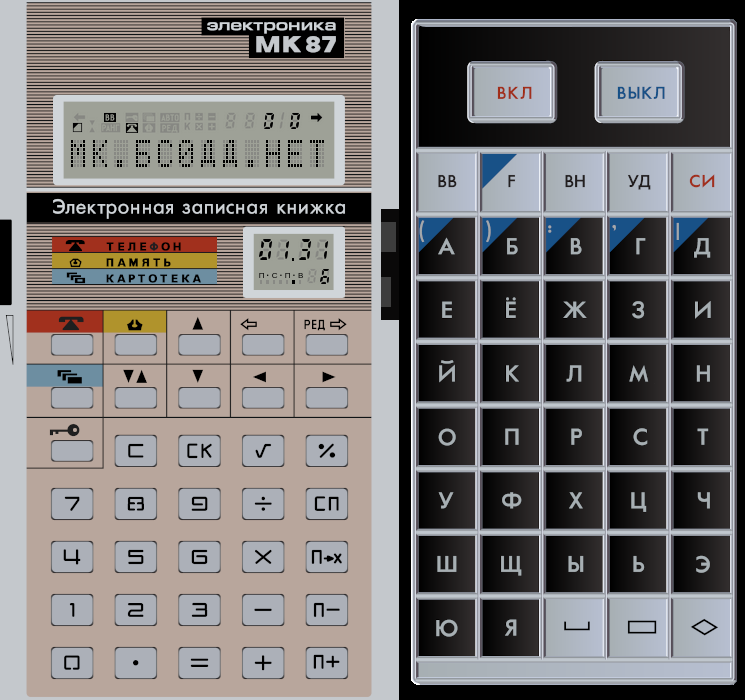
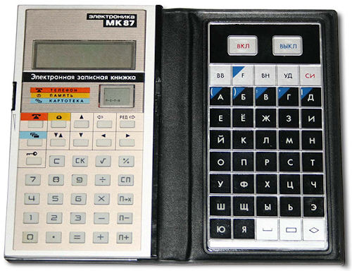

About JS87EMU

JS87EMU is an emulator of the rare Soviet calculator/electronic note book named Elektronika MK87.
GitHub: JS87EMU
2024 © Compys S&N Software
|
Based on js-mk85 emulator
2016 © Alexei Gordeev a.k.a. KP1533TM2 |
Analysis of MK-87 operation and materials
2021 © Dmitry Shtatnov a.k.a. rpocc
2021 © Piotr Piatek a.k.a. piotr433 |
I express special gratitude to the participants of the Sergei Frolov's chat
(Retro computers, calculators and other retro) for help in finding bugs, debugging, and information about the operating features of the device.
Changelog
-> Version 1.62 - 06.03.2025
- Fixed a bug with incorrect address disassembly in SOB and BR family operations.
- Fixed a bug with incorrect parsing of the breakpoint address.
-> Version 1.61 - 16.10.2024
- More efficient graphics compression has been applied.
The overall size of the "distribution" has decreased slightly!
- For greater convenience, the side search arrows and side line navigation arrows have been swapped on the keyboard layout
-> Version 1.6 - 21.09.2024
- Support for loading RAM via network link (URL parameter ram)
- Fixed inaccuracies in the INC(B), DEC(B), DIV, MFPS instructions
- Fixed incorrect readings of the PP register in binary format
-> Version 1.52 - 19.08.2024
- Fixed a bug in the interrupt execution function
(R6/SP was saved instead of PSW)
- Improved interrupt system (correct operation of the WAIT instruction
and reset the internal EVNT interrupt flag)
- Fixed RTT and ASHC instructions
- Fixed a bug in the breakpoint system
(the system worked instantly if the breakpoint
was set to the current address)
- The assembler instruction and register value entry fields are automatically
highlighted when you click on the buttons that transfer data to these fields.
- Now, after entering a value in the input fields, just press Enter
to apply the value entered in the field
-> Version 1.5 - 12.08.2024
- Help is now available with a description of the features of working with the emulator
- Improved keyboard controller emulation (multiple key press support)
- Improved memory controller emulation (returns 0xFF if memory area is empty)
- Minor fixes in Debugger, quick register selection function
-> Version 1.4 - 25.07.2024
- "Debugger" tool introduced:
- Execution control: pause, step by step (1 or more steps at a time), breakpoint at address
- View and edit RAM in "bytes" and "words" modes
- Viewing the state of processor registers (and special registers CPUCTRL, PP and KEYB)
and editing (except KEYB)
- View disassembled data in ROM and RAM (lite-disasm11)
and replace it (lite-asm11) in memory (edited ROM is not saved on page reload)
- Display data in hexadecimal or octal
- Added (previously missing) instructions MARK, ASHC, SXT and fixed a bug in ASH
(although the functionality of the operations is questionable; the firmware does not use them)
- Added support for a software switch (12 bit in CPUCTRL),
the software auto-shutdown timer now works when there is no activity
(triggers after 3.5 minutes, the norm according to the instruction: 2-5 minutes)
- The shape of the "1" segment on the display has been corrected,
the second dot on the clock has been increased
- Pause no longer turns off when switching between tabs
- Various minor bug fixes
-> Version 1.02 - 09.07.2024
- Improved simulation of the watch "Elektronika 51"
- Now each button that opens a page opens it in its own window
(previously all buttons opened the page in the same window)
-> Version 1.01 - 07.07.2024
- Fixed a bug with turning on a switched off device after switching to another tab and back
-> Version 1.00 - 06.07.2024
- First public version of the emulator
- Based on a stripped down and modified version of JS85EMU
(and therefore based on js-mk85)
- Implemented interface and button layout
Design: Dmitry Shtatnov
- A new display has been implemented (since it differs from MK85)
- Full simulation of the built-in clock "Elektronika 51"
(made "by feel", there may be inaccuracies)
- Settings panel
- Full keyboard support (layout diagram available via button)
- Support loading/saving RAM memory
- Support pause and restart
- Ability to turn it off/on
- Vibration when pressing keys (mobile devices only)
- Planning to add: debugger and help
